3D modeling and visualization
Modeling, rendering, and BIM coordination across commercial interiors, public recreation landscapes, and off-grid facility design. Produced in Autodesk Revit, Lumion, SketchUp, and Navisworks Manage.
Walkthrough
An animated walkthrough rendered from the BIM model.
Rendered in Lumion from a Revit model. Open in a new tab if the player does not load.
Motorcycle showroom
Final-year architectural design project for the BSc in Building Engineering and Construction Management at KUET, 2022. Full design and documentation from concept through rendering; graded A+. Modeled in Revit and rendered in Lumion.
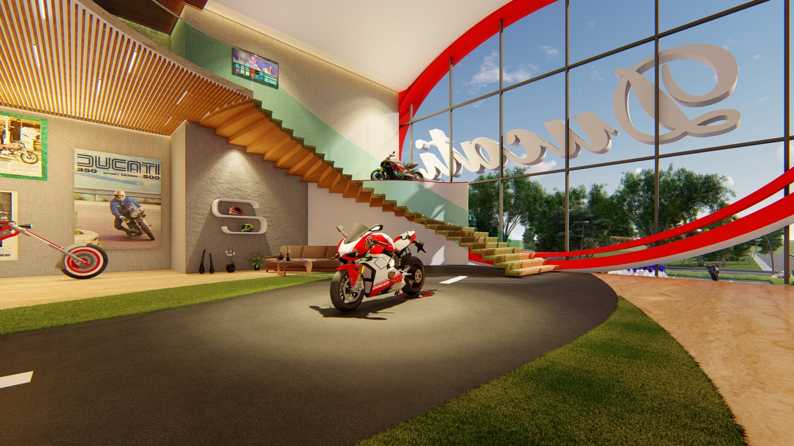
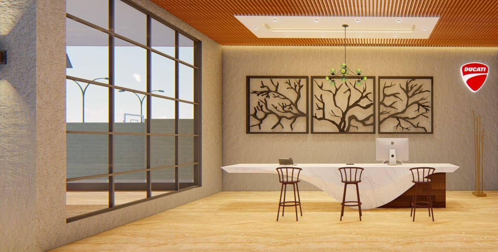
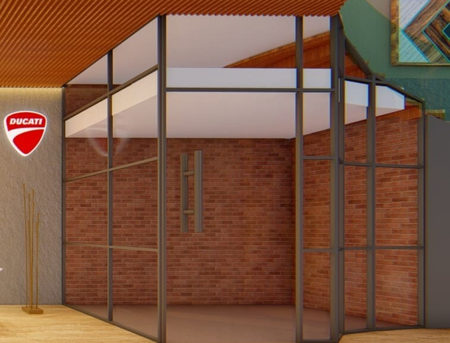
Recreation landscape
Community recreation and landscape scheme modeled during an internship as BIM Modeler at United Purpose in 2022. Terrain, water channel, circulation, and play areas modeled in Revit and rendered in Lumion.
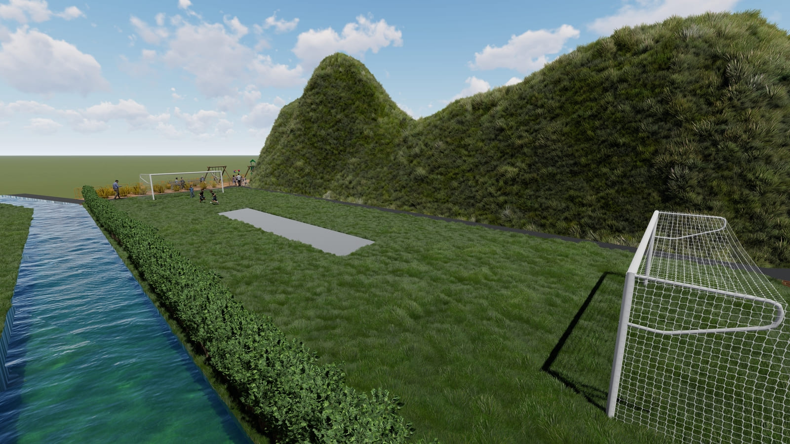
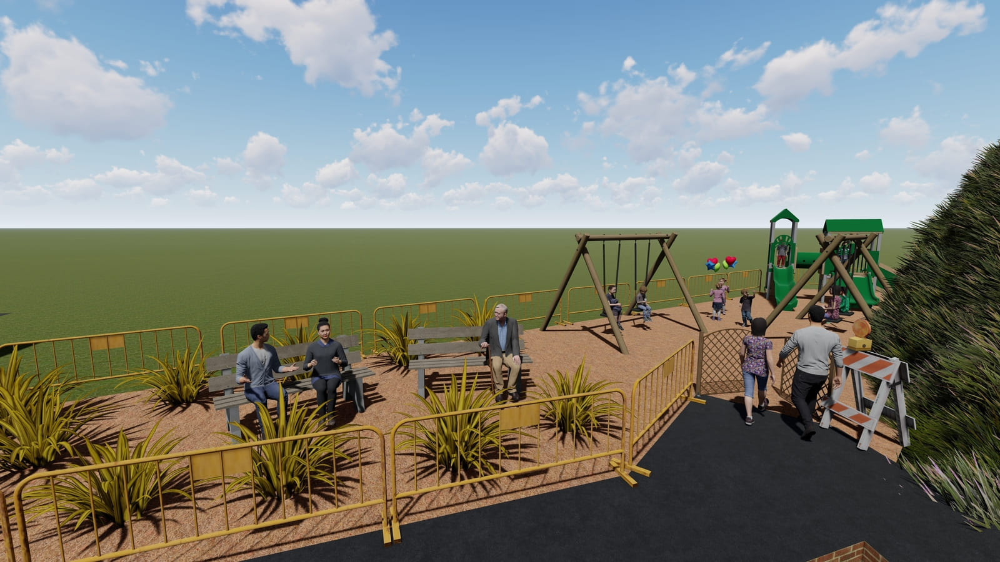
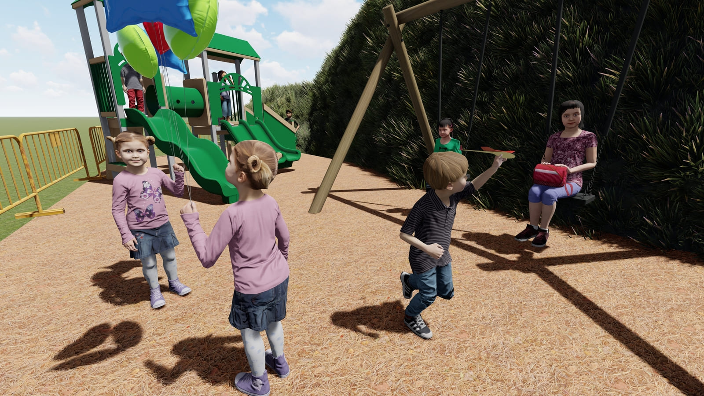
Solar-powered rural facility
Off-grid rural facility with integrated solar arrays and productive planting, modeled during the same United Purpose internship in 2022. The brief was a self-sufficient unit deployable in areas without reliable grid access.
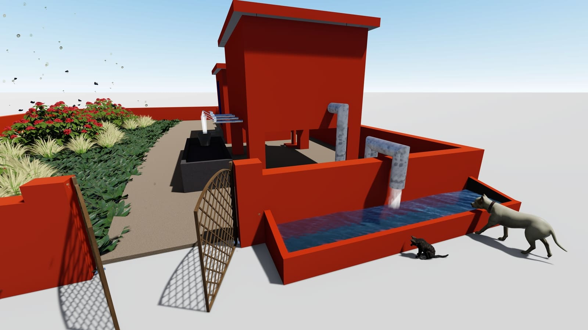
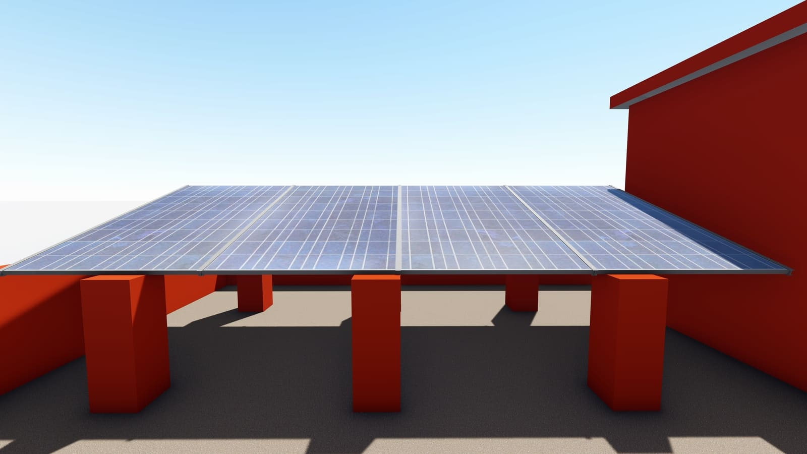
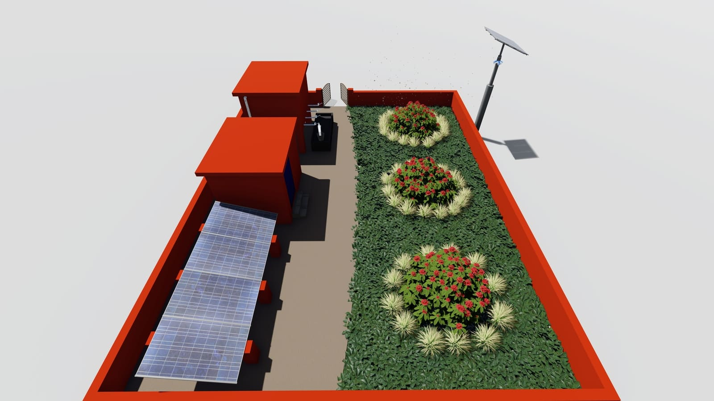
Residential interior
Interior scheme produced for a private client through Fiverr in May 2021. Living space with a tufted feature wall, built-in shelving, and a media console, modeled and rendered to let the client review layout and materials before committing.
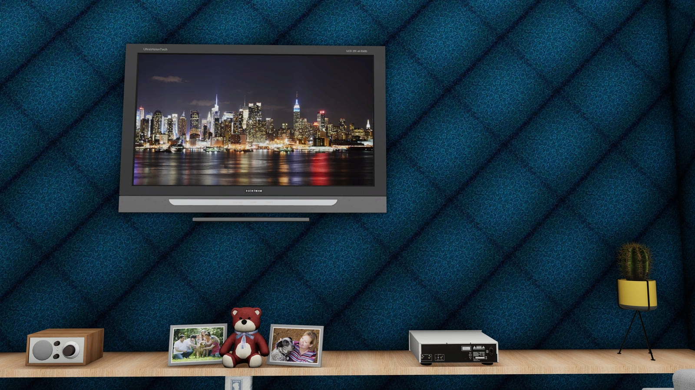
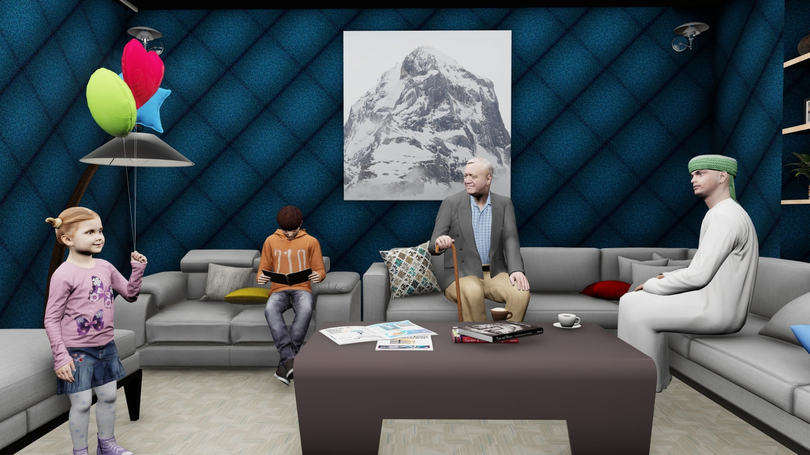
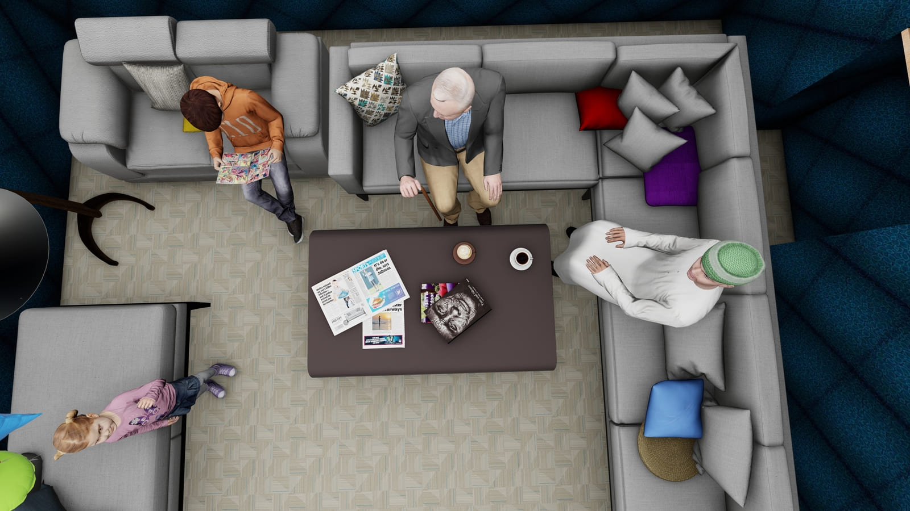